// Il Seggio
Sezione 00. Come pensa un pirataReferendum sulla giustizia. Separazione delle carriere. Ha vinto il no. Io ho votato si'.
Sulla magistratura non ho opinioni forti. Pero' sono un informatico, e un informatico vede che un sistema dove lo stesso nodo e' giudice e parte, dove chi accusa e chi decide condividono lo stesso pool, ha un problema di architettura. La questione e' di separation of concerns, prima che di politica.
Ma non e' di questo che voglio parlare.
Voglio parlare di una cosa che e' successa ai seggi. Un politico scrive, soddisfatto: "Nei seggi abbiamo visto per la prima volta gli elettori non piu' divisi tra maschi e femmine, ma secondo l'ordine alfabetico."
Intento nobile. Moderno. Progressista. Via la divisione binaria, dentro l'uguaglianza.
Io ho letto quella frase e ho pensato: avete appena rotto le code.
L'uguaglianza qui c'entra poco. So come si comportano le code, e quello che ho visto mi ha fatto pensare. L'ho scritto, l'ho detto, e in tantissimi sembravano non capire dove fosse il problema. Quindi ho deciso di farci un articolo.
Attenzione: ai seggi non puoi fare la coda unica. Ogni tavolo ha il suo registro degli elettori. I documenti sono fisicamente divisi. Lo scrutatore del tavolo A-F non ha i fogli del tavolo G-M. La divisione in gruppi e' un vincolo logistico, non una scelta di design. E' come lo sharding di un database: i dati stanno su nodi diversi, e devi mandare la query al nodo giusto.
Ma proprio perche' devi dividere, il modo in cui dividi conta. E l'ordine alfabetico dei cognomi italiani e' tutto tranne che una distribuzione uniforme. Un disastro, a voler essere gentili.
Tesi. La divisione M/F funzionava come load balancer per puro caso biologico: due gruppi al 50%. L'ordine alfabetico crea gruppi sbilanciati, a meno che non bilanci i tagli sulla distribuzione reale dei cognomi. Cosa che nessuno fa. Se il modello e' sbagliato, il resto viene dietro.
// Il Cognome Non E' Uniforme
Sezione 01. 42,271 cognomi dicono la stessa cosaHo preso l'archivio completo dei cognomi italiani. 42,271 cognomi distinti. E ho contato quanti iniziano per ogni lettera. Nota: questa e' una distribuzione per tipi, non per frequenze. I cognomi piu' comuni (Rossi, Russo, Romano, Ferrari) amplificano ulteriormente lo skew perche' si concentrano nelle lettere gia' sovrarappresentate. La distribuzione reale pesata per popolazione sarebbe ancora piu' sbilanciata. Questi numeri sono una stima conservativa.
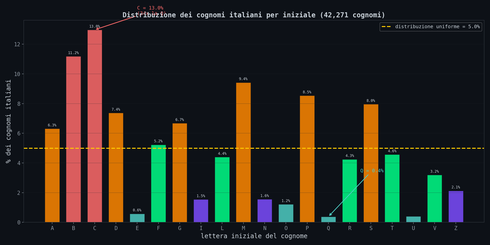
La lettera C da sola copre il 13% dei cognomi. B l'11.2%. M il 9.4%. Dall'altra parte, Q sta allo 0.38%. U allo 0.41%. E allo 0.59%.
La C ha 34 volte piu' cognomi della Q.
Al mio seggio ho visto i cartelli: A-L e M-Z. Due tavoli, due registri. Sembra equo. Meta' dell'alfabeto di qua, meta' di la'. Ma i numeri dicono altro:
56/44. Il tavolo A-L ha il 30% in piu' di elettori rispetto all'M-Z. Stessi sportelli, stesse risorse, carico diverso.
E la vecchia divisione M/F? Due gruppi da ~50% ciascuno. La biologia e' un load balancer migliore dell'alfabeto.
Avevate un sistema che funzionava (50/50). L'avete rotto (57/43). E non ve ne siete neanche accorti.
// La Simulazione
Sezione 02. 900 elettori, 2 tavoli, prima e dopoHo simulato un seggio elettorale. 900 elettori, 2 tavoli con 2 sportelli ciascuno, 12 ore di apertura. Arrivi modellati come processo di Poisson non omogeneo (NHPP) con λ(t) a doppio picco gaussiano (mattina σ=35min, pomeriggio σ=40min). Servizio ~ Exp(μ=2.5 min). Il confronto: quello che c'era prima (M/F) e quello che c'e' adesso (A-L / M-Z).
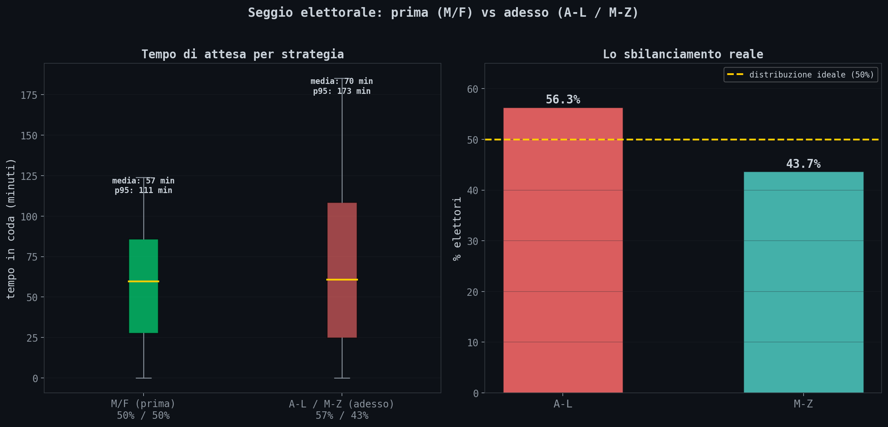
| Strategia | Distribuzione | Attesa media | p95 |
|---|---|---|---|
| M/F (prima) | 50% / 50% | 57 min | 111 min |
| A-L / M-Z (adesso) | 57% / 43% | 70 min | 173 min |
Il p95 e' il numero che conta: e' il tempo che aspetti se sei sfortunato. Con A-L/M-Z aspetti fino a quasi 3 ore. Con il vecchio M/F era meno di 2. Hanno peggiorato le code in nome dell'uguaglianza.
E questo e' il caso medio. Gli elettori non arrivano uniformemente: arrivano a ondate, con picchi la mattina e il tardo pomeriggio. Durante il picco lo sbilanciamento si moltiplica. Il tavolo A-L si satura mentre l'M-Z ha ancora margine. Kingman dice che non conta il carico medio giornaliero. Conta il carico istantaneo durante il picco. E quello, con un 57/43, esplode.
Il problema e' lo sharding key. Ai seggi i registri sono fisicamente separati per tavolo, come shard di un database. La coda unica non la puoi fare, come una query cross-shard senza costi. Ma se scegli una chiave di partizionamento con skew (e l'alfabeto dei cognomi italiani ha uno skew del 57/43 al taglio L/M) ti ritrovi con uno shard bollente e l'altro sottoutilizzato. L'M/F funzionava perche' la distribuzione di genere e' ~50/50: sharding perfetto, per puro caso biologico. Tagliare a meta' dell'alfabeto non e' tagliare a meta' degli elettori.
Il seggio e' solo l'inizio. La stessa matematica governa le metropolitane, i server, le autostrade, i pronto soccorso. E ha una proprieta' che quasi nessuno conosce: il tempo di attesa non cresce in modo lineare. Esplode.
// La Curva Che Esplode
Sezione 03. Kingman's formulaLa cosa che tutti credono di sapere sulle code: se un sistema e' al 50% di carico, aspetti un po'. Al 70%, aspetti un po' di piu'. Al 90%, aspetti il doppio. Crescita lineare. Proporzionale. Intuitiva.
Sbagliato.
La crescita e' iperbolica. Al 50% aspetti 1 unita'. Al 80% aspetti 4. Al 90% ne aspetti 9. Al 95%, 19. Al 99%, 99. La curva non sale: esplode.
Dove ρ e' l'utilizzazione (domanda/capacita'), ca e cs sono i coefficienti di variazione degli arrivi e del servizio, E[S] e' il tempo medio di servizio. Il termine che uccide e' ρ / (1 - ρ). E' un iperbole. Quando ρ si avvicina a 1, il denominatore va a zero e il tempo va all'infinito.
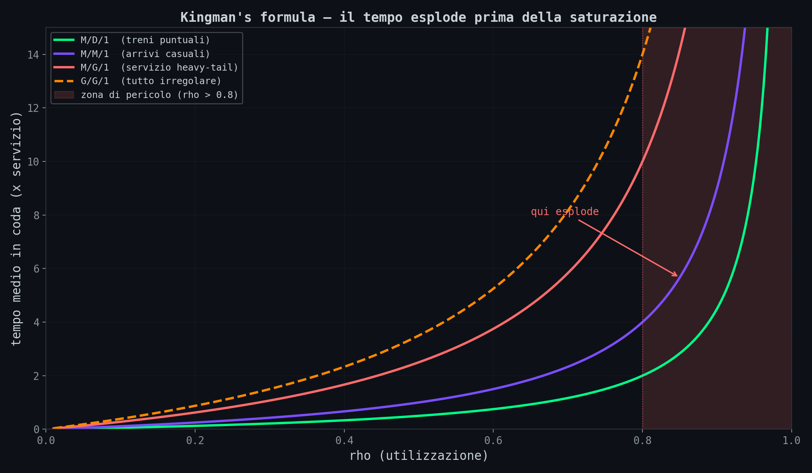
Le quattro curve mostrano scenari diversi:
- M/D/1 (verde): arrivi casuali, servizio deterministico. Il caso migliore. Una metro con orari precisi.
- M/M/1 (viola): tutto casuale. Il modello classico.
- M/G/1 heavy-tail (rosso): servizio con distribuzione a coda pesante. Quando qualcuno impiega 10 volte il tempo medio.
- G/G/1 (arancione tratteggiato): tutto irregolare. Arrivi a raffica, servizio imprevedibile. Il mondo reale.
In tutti i casi, oltre ρ = 0.8 si entra nella zona di pericolo. La differenza tra 80% e 90% di carico non e' un 12.5% in piu' di attesa, e' 2-3 volte tanto. Nessuno lo misura finche' non succede.
Questo spiega perche' il tuo server risponde in 50ms al 70% di CPU e in 2 secondi al 85%. E' Kingman, non un bug.
// La Teoria Tiene?
Sezione 04. 50,000 clienti simulatiHo messo la formula alla prova. Simulazione Monte Carlo di una coda M/M/1 con 50,000 clienti per ogni valore di ρ, da 0.1 a 0.95.
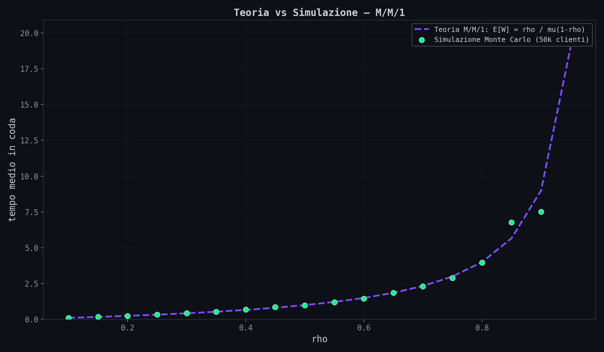
I punti verdi (simulazione) seguono la curva viola (teoria) quasi perfettamente. Tecnicamente Kingman e' un'approssimazione, non un risultato esatto. Ma e' un'approssimazione sorprendentemente accurata.
// I Dati di Londra
Sezione 05. 432 stazioni, intervalli da 15 minutiLa teoria e' bella. Ma funziona nel mondo reale? Ho preso i dati NUMBAT 2024 di Transport for London: i flussi di passeggeri in entrata per ogni stazione della metro di Londra, ogni 15 minuti, per un giorno feriale tipo (martedi'-giovedi').
Il primo grafico e' il profilo di domanda nell'arco delle 24 ore. Nove stazioni, da Waterloo a Canary Wharf.
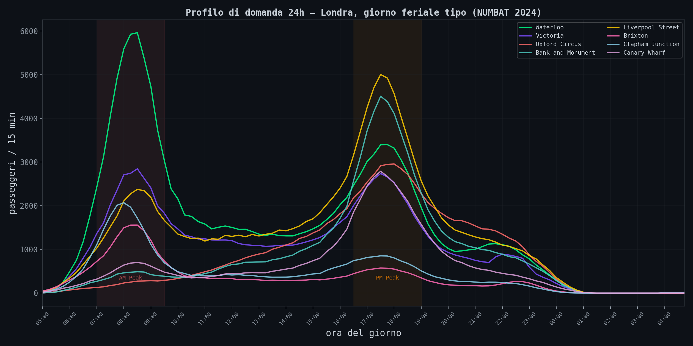
Due picchi netti: AM Peak (07:00-09:30) e PM Peak (16:30-19:00). Waterloo schizza a quasi 6,000 ingressi per quarto d'ora al mattino. Il modello stazionario, quello che assume un tasso di arrivo costante, e' una bugia. La domanda varia di un fattore 10x nell'arco della giornata.
Per ogni stazione ho calcolato ρ = λ / μ, dove λ e' il picco di arrivi nel quarto d'ora piu' affollato dell'AM Peak e μ e' la capacita' (treni per 15 min × 800 passeggeri/treno). Poi ho piazzato ogni stazione sulla curva di Kingman.
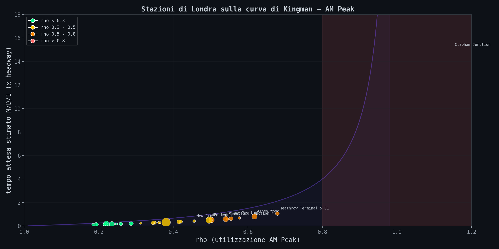
La maggior parte delle stazioni della Tube sta nella zona verde (ρ < 0.3). Il sistema e' ben dimensionato. Ma Clapham Junction (Overground, non Tube) sfonda ρ = 1. Piu' gente che arriva di quanta ne possa partire. E le stazioni di Richmond, Wimbledon, Brixton stanno nella fascia 0.2-0.5 dove il sistema tiene, ma non ha margine per imprevisti.
Il dato piu' utile e' il carico effettivo sui treni, tratta per tratta:
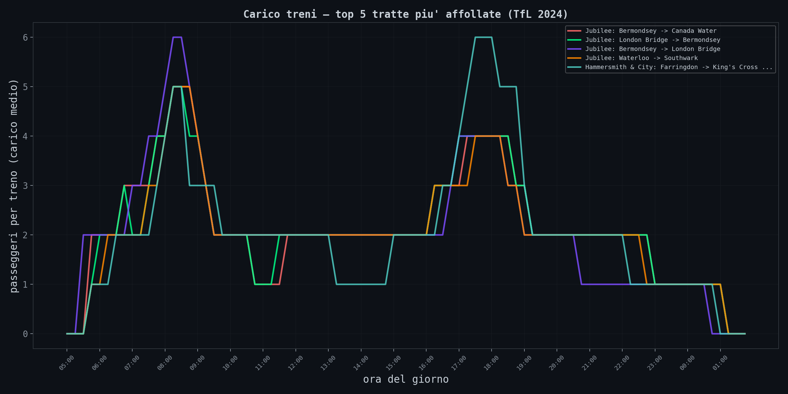
Questo e' il motivo per cui a Oxford Circus alle 8:30 lasci passare il primo treno. E' ρ che lavora.
// New York Conferma
Sezione 06. MTA, la stessa forma dall'altra parte dell'oceanoPer verificare che il pattern non sia specifico di Londra, ho scaricato i dati orari della MTA, la metro di New York. Conteggi per stazione, per ora, per classe tariffaria.
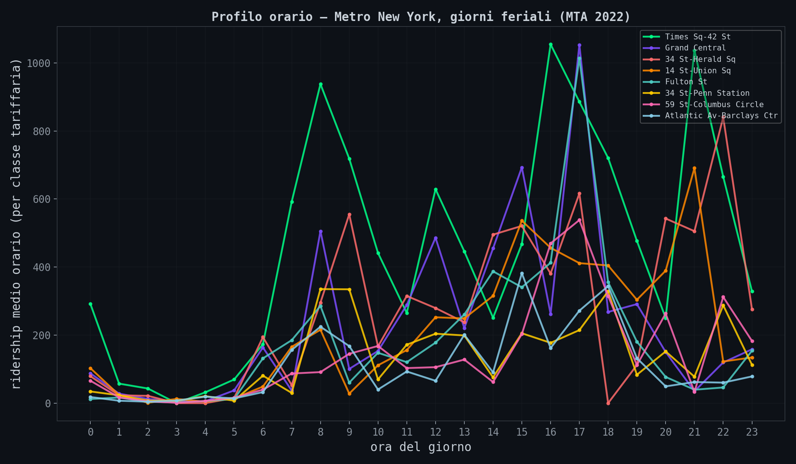
Stessa forma. Due picchi, stesso rapporto tra peak e off-peak. La domanda di trasporto nelle grandi citta' e' universale: segue il ciclo lavoro-casa, non il modello Poisson dei libri di testo.
E qui c'e' il punto critico. Ho preso tutti gli arrivi AM peak (ore 7-9) da tutte le stazioni e ho confrontato la distribuzione empirica con un modello Poisson e un log-normal.
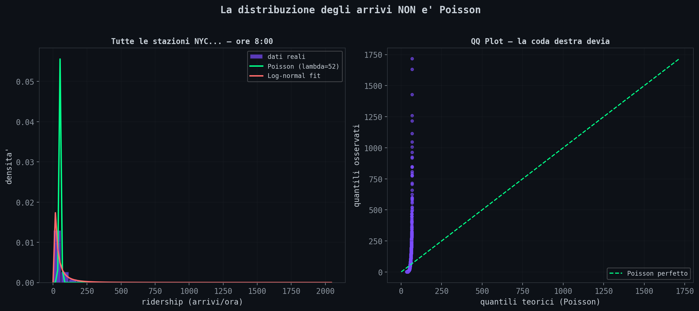
Il QQ plot a destra e' il verdetto: la coda destra devia. I valori estremi sono piu' frequenti di quanto Poisson predica. Traduzione: le raffiche di arrivi (50 persone che escono tutte dallo stesso bus, un treno regionale che svuota 300 pendolari sulla banchina) succedono piu' spesso del previsto. E Kingman dice che piu' la varianza degli arrivi e' alta, peggio e'.
// Il Paradosso dell'Autobus
Sezione 07. L'intuizione mente, la simulazione noL'autobus passa ogni 10 minuti. Quanto aspetti in media alla fermata?
Risposta intuitiva: 5 minuti. Meta' dell'intervallo. Se arrivi in un momento casuale, in media sei a meta' tra due autobus.
Risposta corretta: dipende. Se gli autobus sono perfettamente puntuali (intervallo sempre 10 min), si', aspetti 5 minuti. Ma se gli intervalli variano (e nel mondo reale variano sempre) aspetti di piu'. Con intervalli esponenziali (il caso teorico), aspetti 10 minuti. Non 5. Il doppio.
Si chiama inspection paradox. Quando arrivi in un momento casuale, hai piu' probabilita' di cadere in un intervallo lungo che in uno corto. I grandi intervalli "catturano" piu' passeggeri. L'attesa media non e' E[H]/2 ma:
Dove CV = σ/μ e' il coefficiente di variazione. Con CV = 0 (deterministico), E[W] = E[H]/2. Con CV = 1 (esponenziale), E[W] = E[H]. Con CV = 2 (iperesponenziale), E[W] = 2.5 × E[H]/2.
Ho simulato 100,000 arrivi casuali per 5 distribuzioni diverse degli intervalli, tutte con media 10 minuti:
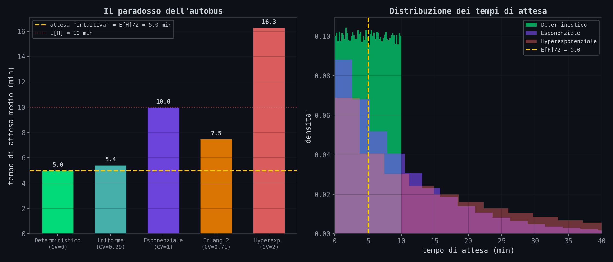
La barra gialla tratteggiata e' quello che tutti credono (5 minuti). Nessuna distribuzione reale ci sta sotto, tranne quella perfettamente deterministica. Con intervalli iperesponenziali, quelli che descrivono i bus nelle citta' con traffico pesante, aspetti piu' del doppio di quello che pensi.
La prossima volta che l'app dice "autobus ogni 10 minuti" e ne aspetti 15, l'inspection paradox sta facendo il suo lavoro.
// La Coda Con Priorita'
Sezione 08. Qualcuno muore di famePronto soccorso. Codice rosso, codice giallo, codice verde. I rossi passano prima. Sembra giusto. Lo e'. Ma ha un prezzo che nessuno dichiara: al crescere del carico, i codici verdi non aspettano un po' di piu'. Aspettano esponenzialmente di piu'.
Ho simulato una coda con due classi di priorita'. Il 60% del traffico e' high priority, il 40% e' low. Stesso server.
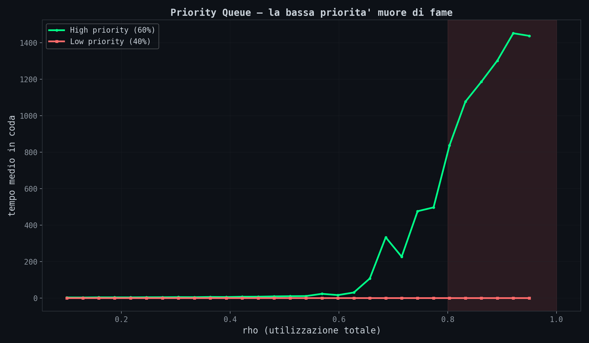
La linea verde (high priority) sale piano. La rossa (low priority) esplode. A ρ = 0.9, la bassa priorita' aspetta decine di volte piu' della alta. Ordini di grandezza, non fattori due o tre.
Questo e' il motivo per cui aspetti 6 ore al pronto soccorso col codice verde anche se il reparto "non e' pieno". In media non e' pieno. Per chi e' in fondo alla coda, lo e' eccome.
In informatica lo chiamiamo starvation. Nei sistemi operativi, nei load balancer, nelle pipeline CI/CD. Il task a bassa priorita' che non viene mai schedulato. La soluzione esiste (aging, fair queuing, deficit round-robin) ma ha un costo: devi accettare che i task ad alta priorita' rallentino un po'. La conservation law di Kleinrock dice che il tempo medio pesato e' costante. Migliorare una classe costa a un'altra, sempre. Equita' ed efficienza sono matematicamente incompatibili, lo dice la conservation law.
// L'Effetto Cascata
Sezione 09. Un nodo lento avvelena il sistemaUltimo pezzo. Cinque stazioni in serie. La Victoria Line da Brixton a Victoria. Un treno parte da Brixton, si ferma a ogni stazione, arriva a Victoria. Tutto regolare. Poi Vauxhall ha un problema: porta bloccata, passeggero che sviene, sosta raddoppiata.
Cosa succede a valle?
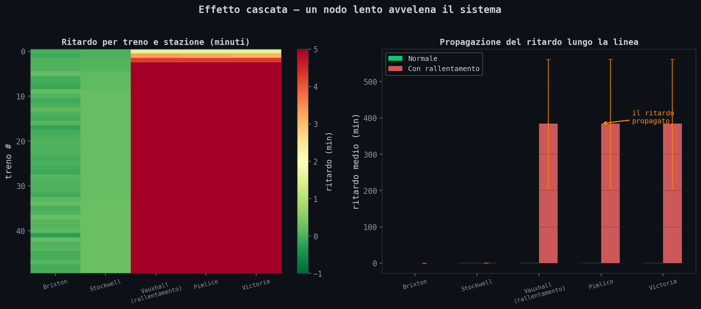
Il ritardo non resta a Vauxhall. Si propaga. Pimlico e Victoria ricevono un ritardo amplificato, perche' ogni treno successivo trova la stazione ancora occupata dal precedente. I treni si ammassano. Gli headway diventano irregolari. I passeggeri si accumulano sulla banchina, rallentando ulteriormente la salita. Feedback positivo.
Questo e' esattamente quello che succede nei microservizi. Un endpoint lento a monte non rallenta solo se stesso. Avvelena tutti i servizi a valle. Le connessioni si accumulano, i timeout cascadano, il circuit breaker scatta troppo tardi. Il sistema non si degrada gradualmente. Collassa.
// Gli Script
Sezione 10. Riproduci tuttoTutto il codice e' nella cartella scripts/il-treno-arriva-con-la-matematica. Servono numpy, matplotlib, scipy, openpyxl. I dati NUMBAT e MTA sono scaricabili liberamente. Nessuna API key.
// Conclusione
Fine trasmissioneSono partito da un seggio elettorale e sono arrivato alla Victoria Line. Il filo e' lo stesso: le code non funzionano come pensi.
Crescono in modo iperbolico. Si sbilanciano in base agli input. E la varianza non la assorbono: la amplificano.
Il politico voleva l'uguaglianza e ha rotto le code (e francamente, ormai, anche le balle). Avevano un sistema bilanciato al 50/50, l'hanno sostituito con un 57/43. Il p95 e' passato da 111 a 173 minuti. Un'ora in piu' di attesa per chi e' sfortunato. L'ingegnere TfL voleva orari piu' densi e ha scoperto che oltre ρ = 0.8 il sistema collassa. Il passeggero alla fermata aspetta il doppio di quello che crede. Il codice verde in pronto soccorso non aspetta un po' di piu': aspetta ordini di grandezza di piu'.
Sono tutte conseguenze della stessa formula. Una formula che ha 60 anni, e' in qualsiasi libro di ricerca operativa del primo anno. Fuori da quel corso, quasi nessuno l'ha mai vista.
Il modello e' sbagliato. E la coda non perdona.
O guardi i dati, o la coda decide per te."
Dati: TfL NUMBAT 2024, MTA NYC 2022, Cognomix.it. Tutto pubblico, tutto riproducibile.